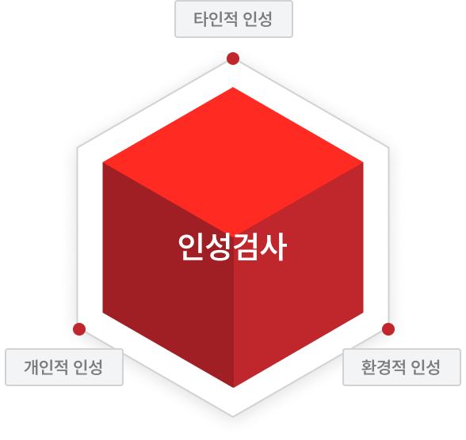
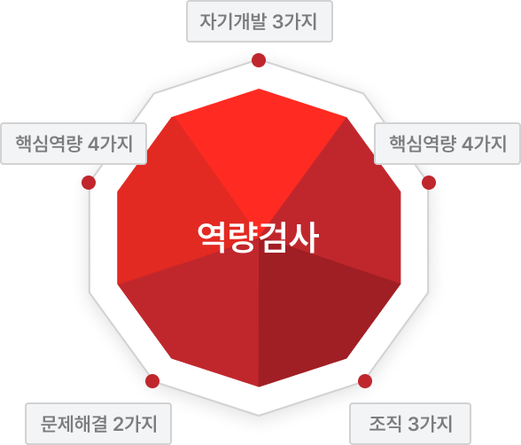
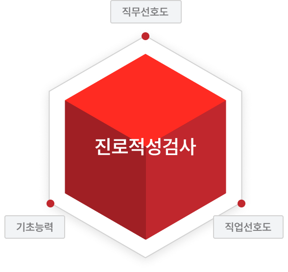
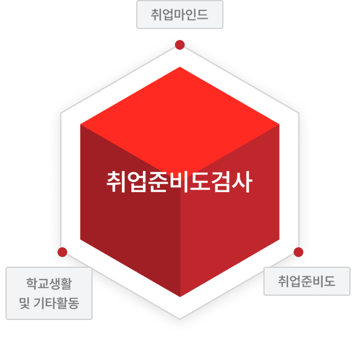

검사소개
아우란트 AUS란 어떤 검사인가?
아우란트 AUS는 진로결정과 취업을 앞두고 어려움을 겪는
전문대학교 학생들이 자기자신을 진단해보고 진로를
결정할 수 있도록 도움을 주기 위한 검사입니다.
아우란트 AUS의 특징
아우란트 AUS 검사는 인·적성검사와 역량, 취업(진로)준비도
검사를 통해 자기자신의 위치를 진단해 볼 수 있도록 고안되었습니다.
아우란트 AUS의 구성
아우란트 AUS는 11가지 인성, 12가지 역량, 19가지 직무에 대한
적성과 취업(진로)준비도/마인드를 측정하는 4가지 검사로
이루어져 있습니다.
인성검사

역량검사
진로적성
검사
취업준비도
검사
01 인성검사

인성검사는 본인의 인성 수준을 확인·진단하는데 도움을
드리기 위한 검사입니다. 본 검사를 통해 본인의 성격 특성을 파악하고, 나에 대한 객관적인 지식을 가질 수 있습니다.
아우란트 AUS 인성검사를 통하여 확인할 수 있는 것
나는 어떤 인성이 우수하고, 어떤 인성이 부족한가?
내가 희망하는 진로에 부합한 인성을 가지고 있는가?
내가 희망하는 직무, 기업에서 요구하는 인성을 충분히 갖추고
있는가?
아우란트 AUS 인성검사의 체크포인트
분석결과
11가지 인성은 개별 인성이 가진 공통적인 속성에 따라 세 가지 주요
인성으로 구분되고,이를 통해 개인의 인성을 거시적이고 포괄적인
측면으로 파악할 수 있습니다. 하위 인성, 주요 인성의 표준화 점수,
상대 비교 백분위 점수 등, 개인의 인성 수준을 심층적으로 분석한 결과를 제공합니다.
02 역량검사

역량검사는 본인이 지닌 주요 역량 보유 수준을 파악하는데
도움을 드리기 위한 검사입니다. 작게는 12가지, 크게는 5가지 역량을 측정하고 있으며, 이를 통해 향후 직업적 성공에 대한 본인의 잠재능력을 평가할 수 있습니다.
아우란트 AUS 역량검사를 통하여 확인할 수 있는 것
나는 어떤 인성이 우수하고, 어떤 인성이 부족한가?
나의 역량 수준으로 비추어 보았을 때, 학업적, 직업적 성취는 어떠할
것인가?
아우란트 AUS 역량검사의 체크포인트
분석결과
12가지 역량 영역의 표준화 점수, 상대비교 백분위 점수 등 개인의
역량 수준을 심층적으로 분석한 결과를 제공합니다.
03 진로적성검사

진로적성검사는 본인의 직업 적성을 파악하고 향후 진로에
대한 준비도를 높이는데 도움을 드리기 위한 검사입니다.
본 검사를 통해 19가지 직무에 대한 선호도 및 역량 수준을
파악하고, 자신에게 가장 적합한 직무가 무엇인지 확인할 수
있습니다.
아우란트 AUS 진로적성검사를 통하여 확인할 수 있는 것
나의 전공에 적합한 직업적성을 가지고 있는가?
내가 좋아하는 일을 무엇이며, 잘하는 일은 무엇인가?
나의 적성에 적합한 직무, 직업은 무엇인가?
아우란트 AUS 진로적성검사의 체크포인트
분석결과
학교생활 + 취업 준비도 + 취업 마인드로 이루어진 3개의 검사를 통해, 취업 전 자신의 현재 위치에 대한 정보를 드립니다.
04 취업준비도검사

취업준비도 검사는 취업 전 나의 역량을 확인하고,
부족한 점을 보완하여 취업 성공률을 높이는데 도움을 주기
위한 검사입니다. 본 검사를 통해 본격적인 구직활동 전에
자신의 핵심 스펙 외 기타 활동내역 등을 객관적으로 진단하고, 취업 전 역량을 높일 수 있습니다.
아우란트 AUS 취업준비도검사를 통하여 확인할 수 있는 것
나의 스펙이 취업하기에 적합한가?
스펙 외 기타활동이 부족하지는 않는가?
취업에 임하는 마음가짐 및 진로에 대한 확신은 충분한가?
아우란트 AUS 취업준비도검사의 체크포인트
분석결과
학교생활 + 취업 준비도 + 취업 마인드로 이루어진 3개의 검사를 통해, 취업 전 자신의 현재 위치에 대한 정보를 드립니다.